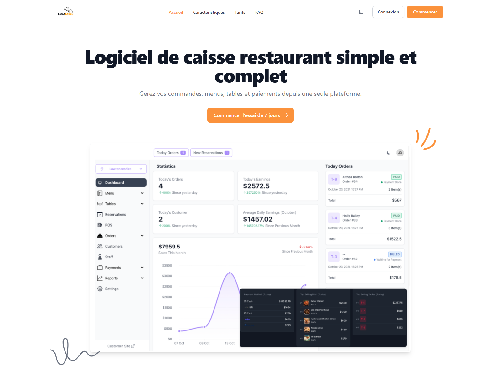

Description
Kulatable est une plateforme de gestion de restaurant permettant de digitaliser et centraliser toutes les opérations.
Fonctionnalités principales
- Gestion des commandes et des tables
- Système de caisse (POS)
- Gestion du menu (ajout, modification, prix)
- Paiements (espèces, carte, mobile money)
- Gestion du personnel
- Statistiques et rapports
- Gestion multi-restaurants
Objectif
Simplifier, automatiser et moderniser la gestion des restaurants afin d'améliorer la performance et l'expérience client.
Public cible
Restaurants, fast-foods, cafés, hôtels et entrepreneurs en restauration.
Notre vision
Dans un contexte où les habitudes de consommation évoluent rapidement, la présence digitale est devenue essentielle pour les restaurants et professionnels de la restauration.
C'est dans cette optique que nous avons développé KULATABLE, une plateforme innovante dédiée à la valorisation des offres culinaires et à la mise en relation avec les clients.
Face aux défis actuels — manque de visibilité, difficulté à attirer de nouveaux clients, gestion non optimisée des commandes — KULATABLE vous permet de :
- Augmenter votre visibilité auprès d'une clientèle ciblée
- Attirer de nouveaux clients et développer votre chiffre d'affaires
- Digitaliser vos menus, offres et promotions
- Faciliter les commandes et interactions clients
- Centraliser vos activités sur une plateforme moderne
- Suivre vos performances en temps réel